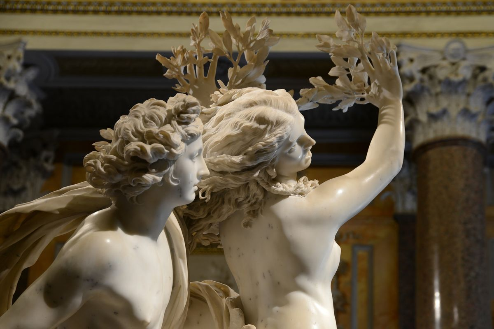
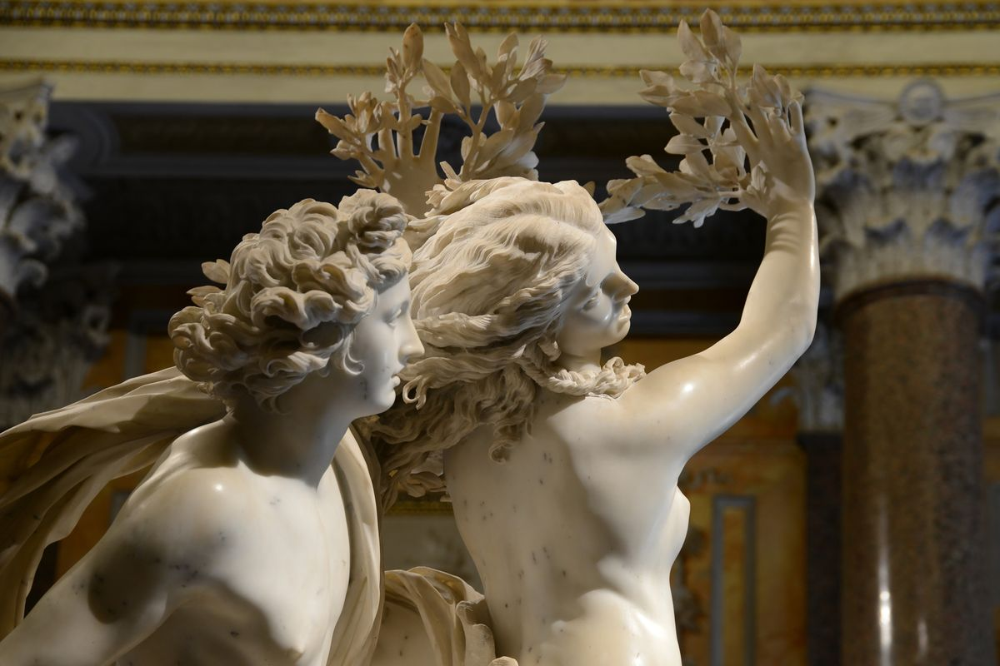

Apollo and Daphne
by bernini
title
Apollo and Daphne
artist
Gian Lorenzo Bernini
Born: 7 December 1598
Died: 28 November 1680
Gian Lorenzo Bernini was an Italian sculptor, a founder of French Impressionist painting and the most consistent and prolific practitioner of the movement's philosophy.
continue reading -materials
Marble
96 inches tall
description
Between 1622 and 1625, Gian Lorenzo Bernini sculpted a Baroque life-sized marble statue entitled Apollo and Daphne. Apollo clutches Daphne's hip, pursuing her as she flees to escape him.
tags
sculpture, Baroque, Myth, marble, Borghese
profile
Gian Lorenzo (or Gianlorenzo) Bernini was an
Italian sculptor and architect.
While a major figure in the world of architecture,
he was, also and even more prominently, the leading
sculptor of his age, credited with creating the
Baroque style of sculpture. As one scholar has commented,
"What Shakespeare is to drama, Bernini may be to s
culpture: the first pan-European sculptor whose name
is instantaneously identifiable with a particular
manner and vision, and whose influence was inordinately
powerful...."
In addition, he was a painter (mostly small
canvases in oil) and a man of the theater: he wrote,
directed and acted in plays (mostly Carnival satires),
for which he designed stage sets and theatrical machinery.
He produced designs as well for a wide variety
of decorative art objects including lamps, tables,
mirrors, and even coaches.
As an architect and city planner, he designed
secular buildings, churches, chapels, and public
squares, as well as massive works combining both
architecture and sculpture, especially elaborate
public fountains and funerary monuments and a whole
series of temporary structures (in stucco and wood)
for funerals and festivals.
His broad technical
versatility, boundless compositional inventiveness
and sheer skill in manipulating marble ensured that
he would be considered a worthy successor of
Michelangelo, far outshining other sculptors of
his generation. His talent extended beyond the
confines of sculpture to a consideration of the
setting in which it would be situated; his ability
to synthesize sculpture, painting, and architecture
into a coherent conceptual and visual whole has been
termed by the late art historian Irving Lavin the
"unity of the visual arts".
Bernini’s career began under his father,
Pietro Bernini, a Florentine sculptor of some
talent who ultimately moved to Rome. The young
prodigy worked so diligently that he earned the
praise of the painter Annibale Carracci and the
patronage of Pope Paul V and soon established
himself as a wholly independent sculptor.
He was
strongly influenced by his close study of the
antique Greek and Roman marbles in the Vatican,
and he also had an intimate knowledge of High
Renaissance painting of the early 16th century.
His study of Michelangelo is revealed in the
St. Sebastian (c. 1617), carved for Maffeo
Cardinal Barberini, who was later Pope Urban VIII
and Bernini’s greatest patron.

 
